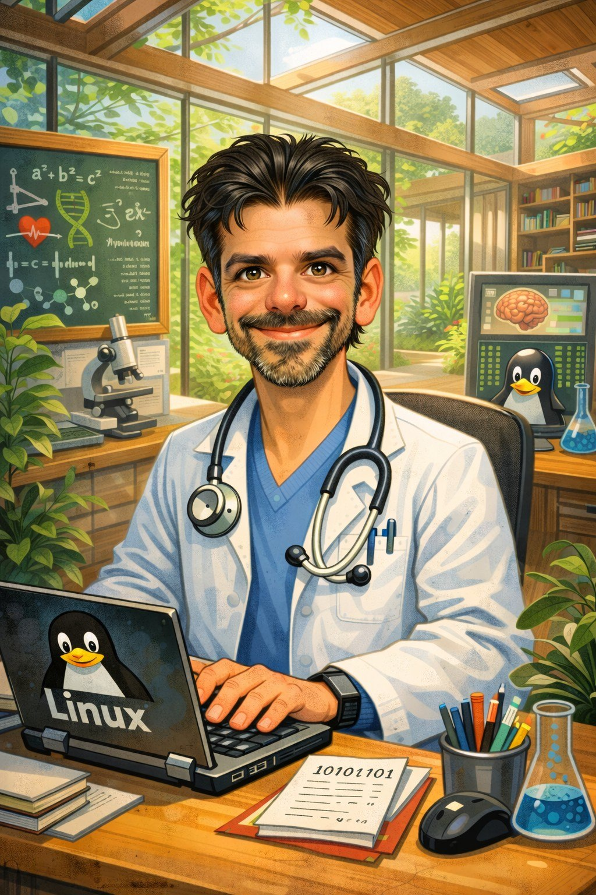

Medicina e saúde
Prática clínica, atenção primária, urgências e assistência hospitalar. Interesse em sistemas que melhorem o acesso, a continuidade e a qualidade da informação em saúde.
Sou Rogério Duarte, médico e desenvolvedor de sistemas. Trabalho nas interfaces entre cuidado, raciocínio científico e tecnologia, buscando transformar problemas complexos em soluções compreensíveis e úteis.
Minha formação e experiência reúnem medicina e computação. Na prática clínica, o ponto de partida são as pessoas, suas circunstâncias e as decisões que afetam o cuidado. Na programação, são os sistemas, as relações entre componentes e a construção de instrumentos capazes de ampliar possibilidades.
Esses campos se encontram na investigação científica: formular perguntas, examinar evidências, construir modelos e reconhecer os limites do que sabemos. Interesso-me especialmente pelo diálogo entre ciências naturais, matemática, tecnologia e humanidades.
A experiência profissional e o estudo contínuo orientam projetos que combinam rigor, praticidade e atenção ao contexto.
Prática clínica, atenção primária, urgências e assistência hospitalar. Interesse em sistemas que melhorem o acesso, a continuidade e a qualidade da informação em saúde.
Programação, automação, aplicações web e interfaces interativas. Projetos que integram arquitetura de software, visualização de informação e inteligência artificial.
Matemática, física, fundamentos da ciência e modelagem. Interesse pelo raciocínio formal, pela análise crítica e pelas conexões entre diferentes disciplinas.
Alguns trabalhos são ferramentas abertas; outros são estudos e protótipos. Cada um explora uma maneira de organizar conhecimento e criar novas interfaces.
Ambiente interativo · 3D
Um portal tridimensional de dodecaedros conectados, dedicado à exploração de assuntos, ferramentas, estudos e projetos.
Explorar o ambienteEstudo de produto · Saúde digital
Estudo técnico e econômico de uma plataforma de teleconsulta e registros clínicos, com atenção a segurança, requisitos e sustentabilidade. Projeto em estudo, não apresentado como serviço certificado.
Conhecer o estudoSoftware experimental · Código aberto
Projeto de edição e experimentação espacial, explorando estruturas geométricas, interação tridimensional e ferramentas de criação computacional.
Ver repositórioEditor de apresentações e vídeos desenvolvido para o Termux. Esta demonstração usa SVG e animações espaciais calculadas no navegador, com narração e controles de reprodução.
Versão experimental: ainda há diferenças entre o Player Web e a exportação MP4. Não se trata da versão estável do editor.
A narração começa após interação com o player. Esta apresentação é um exemplo, não um sistema clínico.
Do roteiro aos vetores animados, à narração e à publicação. Escolha um exemplo: educação, ciência ou divulgação.
O interesse pelo conhecimento não se limita à aplicação imediata. Também envolve compreender os fundamentos das teorias, a história de sua formação e as relações entre linguagem, método e realidade.
São temas que orientam leituras, reflexões e experimentos, mesmo quando não fazem parte de um projeto formal.
Estruturas, demonstrações, lógica e fundamentos matemáticos.
Modelos, fenômenos e relações entre diferentes escalas da natureza.
Programação, representação do conhecimento e sistemas interativos.
Origens das palavras, evolução das ideias e transformação dos métodos.
Os limites do conhecimento, da argumentação e das explicações científicas.
Textos completos, exemplos, limites e ligações entre saúde, computação e ciência. O acervo pode ser explorado por lista ou no laboratório tridimensional.
Explorar os 72 textos completos Ou navegar pelo atlas espacial

Para conversar sobre ciência, tecnologia, desenvolvimento de software e iniciativas interdisciplinares, o contato pode ser feito diretamente por e-mail.